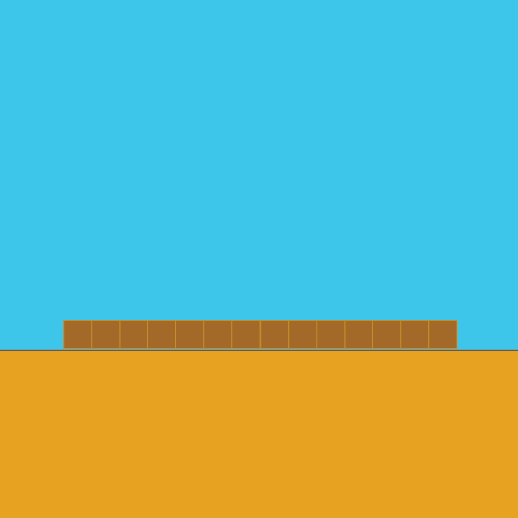
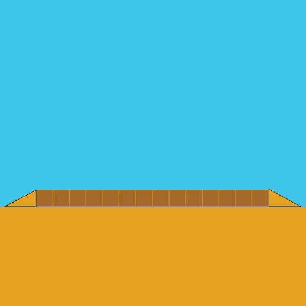
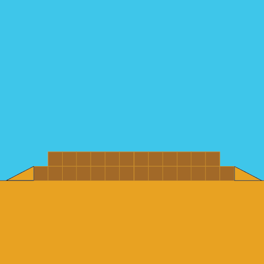
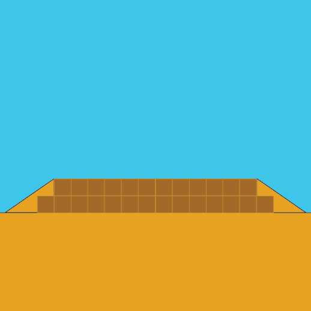
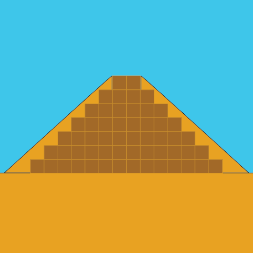
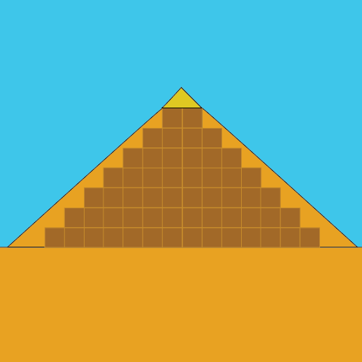
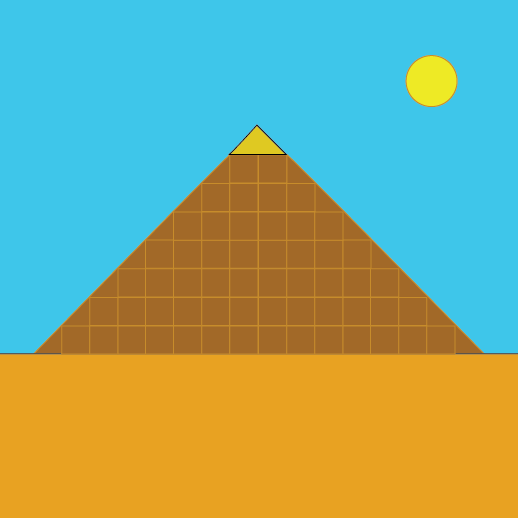

Tombeau pharaonique en 8 étapes faciles
par Frederick Denis
-
Étape 1 : Choisir le terrain idéal
Afin de vous assurer que votre tombeau perdure pour des millénaires, trouvez un terrain idéalement plat ainsi que sec.
-

Étape 2 : Première rangée
À l'aide de votre main d'oeuvre qualifiée ET volontaire, déposez la première rangée bien à plat. La fondation est la partie la plus importante de la charpente.
-

Étape 3 : Le sable comme échaffaudage
Toujours à l'aide de votre main d'oeuvre, montez des monticules de sables tout autour de votre première rangée afin d'y glisser la 2 ème rangée
-

Étape 4 : Seconde rangée de blocs
Apposez les blocs de la seconde rangée. N'oubliez pas de laisser une porte de sortie !
-

Étape 5 : Du sable, encore du sable
Une fois votre seconde rangée bien positionnée, augmentez la quantitée de sable afin de couvrir le second niveau.
-

Étape 6 : Lavez, rincez, répétez
Refaire les étapes 1 à 5 jusqu'à ce que vous arriviez au sommet.
-

Étape 7 : Apposez la pointe
Afin d'ajouter une touche d'estétique à votre projet, déposez sur le sommet une pointe. L'ivoire ainsi que l'or sont des matériaux idéaux.
-

Étape 8 : Passez le balai
Pour avoir accès à votre tout nouveau tombeau, il sera primordial de passer le balai afin de retirer le sable. De plus, pour permettre une pérénité millénaire, il est suggéré d'ajouter de l'argile afin de rendre les faces de la pyramide le plus plat possible.